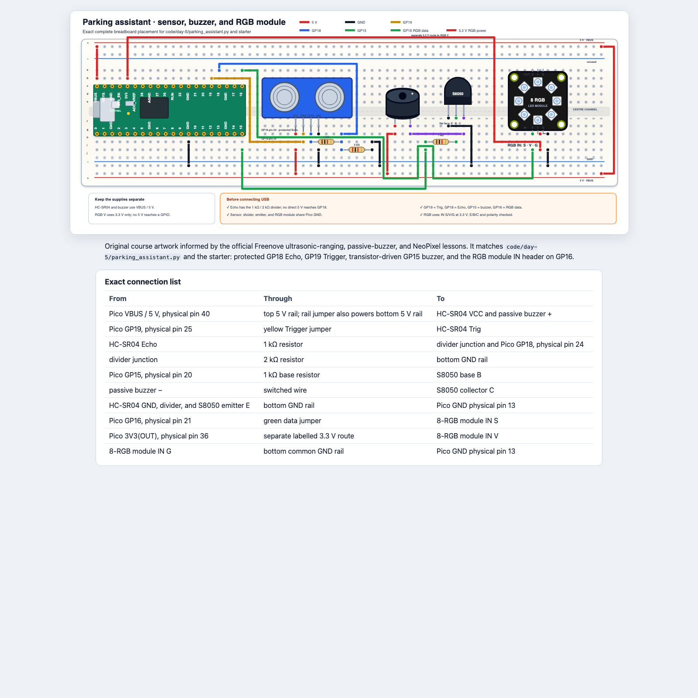

Python in the physical world · Day 5
Combine sensing, decisions, light, and sound into one tested product.
Prototype only: never use this project to guide a real vehicle or protect people or property.
Learning goals
Turn a user need into exact behaviour.
Split one product into testable functions and layers.
Combine known-working sensor, sound, and RGB parts.
Use normal, boundary, invalid, and shutdown cases.
Finish one reliable improvement.
Demonstrate evidence and describe one fixed bug.
Today’s route
Do not wire everything and start the final endless loop as one first test.
Part 1 · Decide what “working” means
A requirement describes observable behaviour—not the lines used to create it.
The user problem
On paper · Describe what a user should notice
Distance measurement—or no usable echo.
Eight RGB pixels, short buzzer sounds, and Shell evidence.
The prototype gives classroom feedback. It does not make a real parking decision safe.
Baseline requirements
On paper · Check every boundary
| State | Rule | RGB | Sound |
|---|---|---|---|
| safe | over 60 cm | green | silent |
| caution | over 25 through 60 cm | amber | slow beep |
| stop | 25 cm or less | red | rapid beep |
| invalid | None | blue | silent |
From requirement to test
On paper · Complete the missing expected result
| Setup | Expected state | Expected outputs |
|---|---|---|
| flat target at 100 cm | safe | green, silent |
| flat target at 40 cm | caution | amber, slow beep |
| flat target at 15 cm | stop | red, rapid beep |
| sensor pointed away | ? | ? |
A test passes only when the observed result matches the written expectation.
Part 2 · Hardware integration
The final circuit combines three known circuits; it does not erase their separate tests.
Build while unplugged · Final circuit

Two voltages, one common ground
Watch and discuss · Point to each route on the diagram
HC-SR04 VCC and passive buzzer power.
RGB module power and Pico GPIO logic.
Every subsystem shares the same reference.
HC-SR04 Echo still passes through the 1 kΩ/2 kΩ divider before GP18.
Layer 1 · Sensor
Build while unplugged · Instructor checks before USB
01_distance_sensor.py.None.Layer 2 · Sound
Build while unplugged · Check transistor E/B/C
02_buzzer_test.py.Layer 3 · Colour
Build while unplugged · Use the header marked IN
IN S to GP16.IN V to 3.3 V and IN G to common GND.01_neopixel_colours.py.Final unplugged check
Partner + instructor check · USB remains disconnected
Every signal, voltage, ground, divider resistor, transistor lead, and RGB IN pin.
No 5 V reaches GPIO, both grounds are common, and every protection part is present.
Only after this check may the final program be connected to live hardware.
Part 3 · Software architecture
Small jobs can be tested before the endless loop uses them together.
The data pipeline
Watch and discuss · Follow one 40 cm reading
distance = measure_distance_cm()
zone = classify_distance(distance)
show_zone(zone, distance)
sound_zone(zone)
At 40 cm: measurement → "caution" → amber pixels → slow beep.
Decomposition
On paper · Match each function to one promise
| Function | Promise | First test |
|---|---|---|
measure_distance_cm() | number or None | flat target, then no echo |
classify_distance(distance) | one state string | fixed numbers, no sensor |
show_zone(zone, distance) | matching RGB output | each state string |
sound_zone(zone) | matching sound pattern | each state string |
Test logic without the sensor
Try in Thonny · Run before the endless loop
print(classify_distance(100)) # safe
print(classify_distance(40)) # caution
print(classify_distance(15)) # stop
print(classify_distance(None)) # invalid
If this test fails, the problem is classification logic—not sensor wiring.
Configuration lookup
Watch and discuss · Predict the tuple
ZONE_COLOURS = {
"safe": (0, 20, 0),
"caution": (25, 8, 0),
"stop": (25, 0, 0),
"invalid": (0, 0, 20),
}
colour = ZONE_COLOURS["caution"]
The result is (25, 8, 0): low red plus some green produces amber.
The endless loop comes last
Watch and discuss · Name the four repeated steps
while True:
distance = measure_distance_cm()
zone = classify_distance(distance)
show_zone(zone, distance)
sound_zone(zone)
Stop with Ctrl+C. The supplied finally block turns RGB and PWM outputs off.
Part 4 · Implement and prove
Working evidence decides when to move on—not how much code has been typed.
Starter file
Try in Thonny · Open parking_assistant_starter.py
Implementation order
classify_distance(); test fixed values.show_zone(); call it with each state.sound_zone(); keep safe and invalid silent.measure_distance_cm(); test target and no echo.Test evidence
Test the product · Record actual results
| Test | Input/setup | Expected |
|---|---|---|
| T1 | 100 cm | safe, green, silent |
| T2 | 40 cm | caution, amber, slow beep |
| T3 | 15 cm | stop, red, rapid beep |
| T4 | no useful echo | invalid, blue, silent |
| T5–6 | exactly 60 cm and 25 cm | agreed boundary states |
| T7 | press Stop | all outputs off |
Scope
On paper · Choose only after the baseline passes
Fill more pixels as the object approaches.
Keep visual warnings while silencing sound.
Show each colour and play one quiet tone at startup.
If time becomes short, cut the improvement—not required tests or safe cleanup.
Final demonstration
Reflection
Which programming idea became clearer because you could see or hear it?
Which bug was code, which was wiring, and which was an incorrect assumption?
Where does the program store thresholds, colours, and states?
What would a real safety product require that this prototype does not have?
Teacher reference
Requirements, feasibility, decomposition, implementation tasks, checkpoints, scope control, and reflection.
Fixed parking-assistant product, layered circuit integration, boundary/invalid/shutdown tests, and a short evidence-based demonstration.
Sources: TEALS Unit 8 lesson files, final-project plan organizer, development plan, and rubric. Hardware tasks use the workshop's original course diagrams.